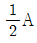
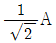
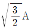

침투비파괴검사기능사 (2014-01-26 기출문제)
1과목: 침투탐상시험법(대략구분)
1. 기포누설시험에 사용되는 발포액의 특성으로 옳지 않은 것은?
- 점도가 높을 것
- 적심성이 좋을 것
- 표면장력이 작을 것
- 시험품에 영향이 없을 것
(정답률: 71%)

2. 내마모성이 요구되는 부품의 표면 경화층 깊이나 피막 두께를 측정하는데 쓰이는 비파괴검사법은?
- 적외선분석검사(IRT)
- 방사선투과검사(RT)
- 와전류탐상검사(ECT)
- 음향방출검사(AET)
(정답률: 75%)
3. 자분탐상시험의 특징에 대한 설명으로 틀린 것은?
- 핀홀과 같은 점 모양의 결함은 검출이 어렵다.
- 자속방향이 불연속 위치와 수직하면 결함 검출이 어렵다.
- 시험체 두께방향의 결함 깊이에 관한 정보는 얻기가 어렵다.
- 표면으로부터 깊은 곳에 있는 결함의 모양과 종류를 알기는 어렵다.
(정답률: 52%)
4. 비파괴검사법 중 일반적으로 결함의 깊이를 가장 적확히 측정할 수 있는 시험법은?
- 자분탐상시험
- 침투탐상시험
- 방사선투과시험
- 초음파탐상시험
(정답률: 65%)
5. 표면코일을 사용하는 와전류탐상시험에서 시험코일과 시험체 사이의 상대 거리의 변화에 의해 지시가 변화 하는 것을 무엇이라 하는가?
- 오실로스코프 효과
- 표피효과
- 리프트 오프 효과
- 카이저 효과
(정답률: 61%)
6. 형광침투액을 사용한 침투탐상시험의 경우 자외선등 아래에서 결함지시가 나타내는 일반적인 색은?
- 갈색
- 자주색
- 황록색
- 청색
(정답률: 90%)
7. 다른 비파괴검사법과 비교했을 때 방사선투과시험의 특징에 대한 설명으로 틀린 것은?
- 표면균열만을 검출할 수 있다.
- 반영구적인 기록이 가능하다.
- 내부결함의 검출이 가능하다.
- 방사선 안전관리가 요구된다.
(정답률: 86%)
8. 시험체를 가압 또는 감압하여 일정한 시간이 지난 후 압력변화를 계측하여 누설검사하는 방법을 무엇이라 하는가?
- 헬륨 누설검사
- 암모니아 누설검사
- 압력변화 누설검사
- 전위차에 의한 누설검사
(정답률: 87%)
9. 비파괴검사의 신뢰도를 향상시킬 수 있는 내용을 설명한 것으로 틀린 것은?
- 비파괴검사를 수행하는 기술자의 기량을 향상시켜 검사의 신뢰도를 높일 수 있다.
- 제품 또는 부품에 적합한 비파괴검사법의 선정을 통해 검사의 신뢰도를 향상시킬 수 있다.
- 제품 또는 부품에 적합한 평가 기준의 선정 및 적용으로 검사의 신뢰도를 향상시킬 수 있다.
- 검출 가능한 모든 지시 및 불연속을 제거함으로써 검사의 신뢰도를 향상시킬 수 있다.
(정답률: 70%)
10. 방사선투과시험시 농도가 짙은 사진이 나오는 일반적인 이유 2가지가 모두 옳은 것은?
- 초과 노출과 과현상
- 불충분한 세척과 과현상
- 초과 노출과 오염된 정착액
- 오염된 정착액과 불충분한 세척
(정답률: 67%)
11. 단면적1m2인 환봉을 10kgf의 하중으로 인장할 경우 인장응력은?
- 0.098Pa
- 9.8Pa
- 98Pa
- 980Pa
(정답률: 51%)
12. 직선도체에 500A의 전류를 통했을 때 도선의 중심에서 50cm 떨어진 위치에서의 자계의 세기는 얼마인가?
- 약 1.6[A/m]
- 약 3.2[A/m]
- 약 160[A/m]
- 약 320[A/m]
(정답률: 46%)
13. 자분탐상시험에서 자력선 성질이 아닌 것은?
- N극에서 나와서 S극으로 들어간다.
- 자력선의 밀도가 큰 곳은 자계가 세다.
- 자력선의 밀도는 그 점에서 자계의 세기를 나타낸다.
- 자력선은 도중에서 갈라지거나 서로 교차한다.
(정답률: 73%)
14. 초음파 진동자에서 초음파의 발생효과는 무엇인가?
- 진동효과
- 압전효과
- 충돌효과
- 회절효과
(정답률: 43%)
15. 다음 중 침투액의 침투시간에 크게 영향을 미치는 인자와 거리가 먼 것은?
- 침투액의 종류
- 시험체의 무게
- 시험체의 재질
- 예측되는 결함의 종류
(정답률: 81%)
16. 다음 중 알루미늄 대비시험편의 특성에 관한 설명으로 틀린것은?
- 시험편의 제작이 간편하다.
- 비교적 미세한 균열을 만들 수 있다.
- 균열의 폭 및 깊이를 조정할 수 있다.
- 장시간 반복하여 사용하면 균열의 재현성이 나빠진다.
(정답률: 55%)
17. 다음 중 모세관현상에서 관속의 액면의 높이가 낮은 물질은?
- 물
- 수은
- 기름
- 알콜
(정답률: 72%)
18. 침투탐상시험에서 침투액이 시험체 표면의 결함 속으로 침투하는데 영향을 미치는 인자로 옳은 것은?
- 모세관현상, 적심성, 표면장력
- 모세관현상, 시험면의 청결도, 조명의 밝기
- 모세관현상, 결함의 형상, 강자성 시험체
- 모세관현상, 표면장력, 자장의 세기
(정답률: 87%)
19. 침투탐상시험에서 적심성을 측정하는 방법은?
- 표면장력
- 모세관현상
- 점성
- 접촉각
(정답률: 50%)
20. 형광침투액의 구성성분 중 가장 높은 함량을 갖는 성분은?
- 유성형광염료
- 유성계면활성제
- 연질석유게탄화수소
- 프탈산에스테르
(정답률: 40%)
2과목: 침투탐상관련규격(대략구분)
21. 다공질이나 흡수성 재료의 검사에 이용되지만 검사의 신뢰성이나 정확도를 기대하기 어려운 침투탐상방법은 무엇인가?
- 기체 방사성 동위원소법
- 후유화성 침투탐상검사
- 휘발성 액체법
- 하전입자법
(정답률: 49%)
22. 침투액의 성질에 관한 설명으로 틀린 것은?
- 낮은 인화점을 가져야 한다.
- 점성은 침투속도에 영향을 준다.
- 접촉각이 작을수록 적심성이 좋다.
- 휘발되는 속도가 너무 빠르지 않아야 한다.
(정답률: 75%)
23. 다음 중 침투탐상검사로 검출이 가능한 결함이 아닌 것은?
- 단조품의 겹침
- 주조품의 열간 터짐
- 용접부의 표면 균열
- 주조품의 내부수축공
(정답률: 74%)
24. 기온이 급강하하여 에어졸형 탐상제의 압력이 낮아져서 분무가 곤란할 때 검사자의 조치 방법으로 가장 적합한 것은?
- 새 것과 언 것을 교대로 사용한다.
- 온수 속에 탐상 캔을 넣어 서서히 온도를 상승시킨다.
- 에어졸형 탐상제를 난로 위에 놓고 온도를 상승시킨다.
- 일단 언 상태에서는 온도를 상승시켜도 제 기능을 발휘 하지 못하므로 폐기한다.
(정답률: 83%)
25. 수용성 습식현상제는 물에 백색 현상 분말을 현탁하여 사용한다. 이 현상액의 농도를 측정하는 기구는?
- ph메타
- 비중계
- 점도계
- 룩스메타
(정답률: 52%)
26. 침투탐상시험에서 시험체에 침투액을 적용한 후 배액시간이 너무 길어지면 나타나는 현상으로 틀린 것은?
- 침투액이 건조하게 된다.
- 침투효과가 저하된다.
- 세척처리가 곤란하다.
- 현상이 쉬워진다.
(정답률: 60%)
27. 다음 중 현상제가 지녀야 할 특성에 관한 설명으로 틀린 것은?
- 현상막을 제거하기 쉬워야 한다.
- 건식현상제는 투명도가 있는 것이어야 한다.
- 염색침투탐상에 사용하는 현상제는 백색도가 낮아야 한다.
- 형광침투액을 사용할 때는 자외선에 의해 형광을 발하지 않아야 한다.
(정답률: 49%)
28. 침투탐상 시험방법 및 침투지시모양의 분류(KS B0816) 에 규정한 속건식 현상제의 적용법으로 틀린 것은?
- 분무
- 붓기
- 침지
- 붓칠
(정답률: 27%)
29. 침투탐상 시험방법 및 침투지시모양의 분류(KS B0816)에 따른 침투탐상시험 중 "전처리- 침투처리 - 제거처리 - 현상처리 - 관찰 - 후처리"의 순서로 하는 시험방법은?
- 용제제거성 염색 침투액 - 속건식 현상법
- 용제제거성 형광 침투액 - 수현탁성 습식 현상법
- 후유화성 형광 침투액(물베이스 유화제) - 속건식 현상법
- 후유화성 형광 침투액(물베이스 유화제) - 수현탁성 습식현상법
(정답률: 61%)
30. 침투탐상 시험방법 및 침투지시모양의 분류(KS B 0816)에서 기름베이스 유화제와 형광침투액을 함께 쓸 때 유화시간의 규정으로 옳은 것은?
- 침투제 적용 후 즉시
- 침투제 적용 후 3분 이내
- 유화제 적용 후 즉시
- 유화제 적용 후 3분 이내
(정답률: 57%)
31. 침투탐상 시험방법 및 침투지시모양의 분류(KS B 0816)에서 잉여 침투액의 제거 방법 중 잘못된 것은
- 적절한 헹구기 기법을 사용한다.
- 수온이 80도 정도인 물을 사용한다.
- 깨끗한 천을 사용한다.
- 깨끗한 종이(휴지)를 사용한다.
(정답률: 76%)
32. 침투탐상 시험방법 및 침투지시모양의 분류(KS B 0816)에서 침투지시 모양의 분류에 대한 설명으로 틀린 것은?
- 모양 및 존재 상태에 따라 분류한다.
- 연속지시의 크기는 개개의 길이 및 상호거리를 합한 값이다.
- 선상침투지시 모양은 길이가 나비의 3배 미만인 것이다.
- 선상침투지시 이외의 것은 갈라짐이나 원형상지시이다.
(정답률: 73%)
33. 침투탐상 시험방법 및 침투지시모양의 분류(KS B 0816)에서 용제 세척액이 필요한 경우의 시험방법은?
- FA-D, VA-W
- FB-A, VB-W
- FA-D, FB-A
- FC-A, VC-W
(정답률: 70%)
34. 침투탐상 시험방법 및 침투지시모양의 분류(KS B 0816)에서 물에 의한 잉여 형광침투액의 제거시 특별한 규정이 없는 경우 수온은 몇 ℃를 넘지 않도록 규정하고 있는가?
- 40
- 60
- 75
- 100
(정답률: 65%)
35. 침투 탐상 시험 방법 및 침투 지시 모양의 분류(KS B 0816)에서 규정 한 필요시 침투 결함의 기록방법에 속하지 않는 것은?
- 도면
- 사진
- 스케치
- 전사
(정답률: 54%)
36. 항공우주용 기기의 침투탐상 검사방법(KS W 0914) 에서 침투액을 침지법으로 적용할 경우 총 체류 시간은?
- 총 체류 시간의 1/3
- 총 체류 시간의 1/2
- 총 체류 시간의 2/3
- 총 체류 시간의 3/4
(정답률: 58%)
37. 침투탐상 시험방법 및 침투지시모양의 분류(KS B 0816)에 의한 다음 시험방법 중 암실이 필요하지 않은 것은?
- 수세성 형광침투액을 사용
- 용제제거성 형광침투액 사용
- 용제제거성 염색침투액 사용
- 후유화성 형광침투액 사용
(정답률: 83%)
38. 침투탐상 시험방법 및 침투지시모양의 분류(KS B 0816)에서 사용되는 A형 대비 시험편에 관한 설명으로 틀린 것은?
- 시험편의 재료는 A2024P 이다.
- 시험편의 두께는 8~10mm 이다.
- 시험편의 크기는 길이 75mm, 너비 50mm이다.
- 시험편의 중앙부에 깊이 2mm의 흠을 기계 가공한다.
(정답률: 58%)
39. 항공우주용 기기의 침투탐상 검사방법(KS W 0914)에서 규정한 친유성 유화제의 점검주기와 수분함유량의 범위가 옳게 연결된 것은?
- 주 1회 - 3% 이하
- 주 1회 - 5% 이하
- 월 1회 - 3% 이하
- 월 1회 - 5% 이하
(정답률: 30%)
40. 침투탐상 시험방법 및 침투지시모양의 분류(KS B 0816)에서 사용하는 A형 대비 시험편의 재료는?
- 철
- 구리
- 니켈
- 알루미늄
(정답률: 75%)
3과목: 금속재료일반 및 용접일반(대략구분)
41. 항공우주용 기기의 침투탐상 검사방법(KS W 0914)에 따라 지시모양 관찰에 대한 사항 중 틀린 것은?
- 염색침투탐상검사의 경우 조명장치는 검사대상품의 표면에 최소 1000[Lx]의 백색광을 방사하는 것일 것
- 형광침투탐상검사의 경우 주위 배경의 백색광은 20[Lx]이하 일 것
- 자외선조사장치는 자외선 필터 앞면에서 38cm 되는 거리에서 방사조도가 800μW/cm2 이상 일 것
- 염색침투 탐상장치의 관찰 장소는 월 1 회 점검 할 것
(정답률: 43%)
42. 항공우주용 기기의 침투탐상 검사방법(KS W 0914)에서 과거에 실시한 청정화, 표면 처리 또는 실제의 사용에 의해 검사의 유효성을 저하시키는 표면상태를 생성하고있는 징후가 인정되는 경우에 어떤 처리를 하도록 규정 하는가?
- 에칭
- 물리적 청정화
- 기계적 청정화
- 용제에 의한 청정화
(정답률: 57%)
43. 다음 중 볼트, 너트, 전동기축 등에 사용되는 것으로 탄소함량이 약 0.2~0.3%정도인 기계구조용 강재는?
- SM25C
- STC4
- SKH2
- SPS8
(정답률: 62%)
44. 보통 주철(회주철) 성분에 0.7~1.5% Mo, 0.5~4.0% Ni 을 첨가하고 별도로 Cu, Cr 을 소량 첨가한 것으로 강인하고 내마멸성이 우수하여 크랭크축, 캠축, 실린더 등의 재료로 쓰이는 것은?
- 듀리론
- 니-레지스트
- 애시큘러 주철
- 미하나이트 주철
(정답률: 46%)
45. 다음 합금 중에서 알루미늄 합금에 해당되지 않는 것은?
- Y합금
- 콘스탄탄
- 라우탈
- 실루민
(정답률: 66%)
46. 체심입방격자(BCC)의 근접 원자간 거리는? (단, 격자정수는 A이다.)
- A



(정답률: 43%)
47. 탄소강 중에 포함된 구리의 영향으로 옳은 것은?
- 내식성을 저하시킨다.
- Ar1의 변태점을 저하시킨다.
- 탄성한도를 감소시킨다.
- 강도, 경도를 감소시킨다.
(정답률: 49%)
48. 주철의 물리적 성질을 설명한 것 중 틀린 것은?
- 비중은 C, Si 등이 많을수록 커진다.
- 흑연편이 클수록 자기 감응도가 나빠진다.
- C, Si 등이 많을수록 융융점이 낮아진다.
- 화합 탄소를 적게 하고 유리 탄소를 균일하게 분포시키면 투자율이 좋아진다.
(정답률: 43%)
49. 6:4 황동에 철을 1% 내외 첨가한 것으로 주조재, 가공재로 사용되는 합금은?
- 인바
- 라우탈
- 델타메탈
- 하이드로날륨
(정답률: 54%)
50. 다음 중 슬립(SLIP)에 대한 설명으로 틀린 것은?
- 슬립이 계속 진행하면 변형이 어려워진다.
- 원자밀도가 최대인 방향으로 슬립이 잘 일어난다.
- 원자밀도가 가장 큰 격자면에서 슬립이 잘 일어난다.
- 슬립에 의한 변형은 쌍정에 의한 변형보다 매우 작다.
(정답률: 53%)
51. 다음 중 형상 기억 합금으로 가장 대표적인 것은?
- Fe-Ni
- Ni-Ti
- Cr-Mo
- Fe- Co
(정답률: 67%)
52. 다음 중 소성가공에 해당되지 않는 가공법은?
- 단조
- 인발
- 압출
- 표면처리
(정답률: 70%)
53. 주철에서 어떤 물체에 진동을 주면 진동에너지가 그 물체에 흡수되어 점차 약화되면서 정지하게 되는 것과 같이 물체가 진동을 흡수하는 능력은?
- 감쇠능
- 유동성
- 연신능
- 용해능
(정답률: 71%)
54. 비중 7.14 용융점 약419℃ 이며 다이캐스팅용으로 많이 이용되는 조밀육방격자 금속은?
- Cr
- Cu
- Zn
- Pb
(정답률: 64%)
55. Fe-C 평형상태도에서 자기 변태만으로 짝지어진 것은?
- A0변태, A1변태
- A1변태, A2변태
- A0변태, A2변태
- A3변태, A4변태
(정답률: 65%)
56. 분말상 Cu에 약10%Sn 분말과 2% 흑연 분말을 혼합하고, 윤활제 또는 휘발성 물질을 가한 후 가압 성형하여 소결한 베어링 합금은?
- 켈밋 메탈
- 배빗메탈
- 앤티프리션
- 오일리스 베어링
(정답률: 56%)
57. 다음중 시효경화성이 있는 합금은?
- 실루민
- 알팩스
- 문쯔메탈
- 두랄루민
(정답률: 59%)
58. 진유납이라고도 말하며 구리와 아연의 합금으로 그 융점은 820℃ ~ 935℃ 정도인 것은?
- 은납
- 황동납
- 인동납
- 양은납
(정답률: 63%)
59. 셀룰로오스(유기물)를 20~30% 정도 포함하고 있어 용접 중 가스를 가장 많이 발생하는 용접봉은?
- E4311
- E4316
- E4324
- E4327
(정답률: 49%)
60. 산소-아세틸렌 가스용접기로 두께가 2mm인 연강판의 용접에 적합한 가스용접봉의 이론적인 지름(mm)은?
- 1
- 2
- 3
- 4
(정답률: 59%)